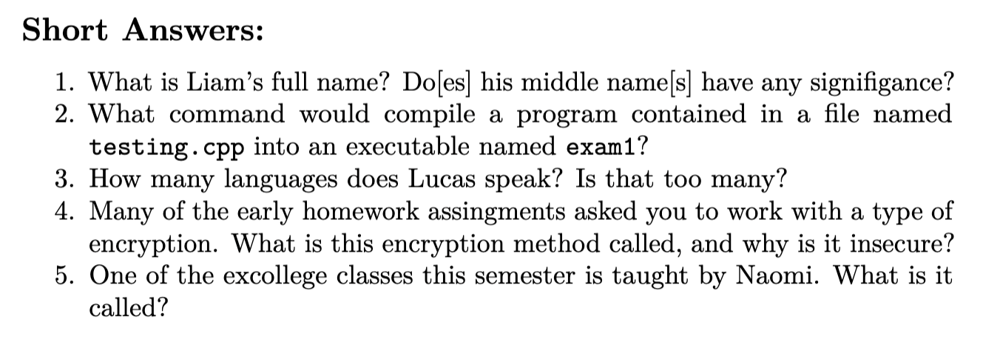

Welcome!
Midterm Review
Liam and Lucas
Are you supposed to be here?
yes, obviouslyTonight's goals:
- Understand Expectations
- Develop Confidence
- Answer Questions
Exam Structure
Word Bank

Short Response
Programming
Debugging
bool is_bigger(int p, int q);
int main() {
int a;
if (is_bigger(a, 6)) {
cout << "a is bigger" << endl;
} else {
cout << "a is NOT bigger" << endl;
}
return 0;
}
bool is_bigger(int p, int q) {
return p > q;
}
Skills and Concepts
C++ Concepts and Syntax
- Basic Operations
- Conditionals and Boolean Expressions
- Loops (
forandwhile) - Functions (declarations, definitions, calls, scope, CBV/CBR)
Memory and Data
- Arrays (1D and 2D)
- File I/O (opening, checking, reading, closing)
- Pointer Concepts (tracing, escaping scope)
- Pointer Utilization (passing through functions,
*and&) - Dynamic Memory Allocations (
newanddelete)
Utilities
diff- Compilation
pull-code11andsubmit11
Q/A
Practice Problems
Practice Problems
Problem 1
int i = 17;
while (i > 8) {
some_function(i);
cout << "CS 11" << endl;
i--;
}
- How many times is
"CS 11"printed?9
- What is the value of
iafter the loop?8
Problem 2
Write a function with the following signature:
void triangular_areas(
float bases[],
float heights[],
float areas[]
);
- The three arrays are all of length
SIZE. bases[]andheights[]contain the ordered dimensions of triangles.- When the function is complete,
areas[]should contain the ordered areas of those triangles.
Problem 2
void triangular_areas (
float bases[],
float heights[],
float areas[]
) {
for (int row = 0; row < SIZE; row++) {
areas[row] = bases[row] * heights[row] * 0.5;
}
}
Problem 3
Find the Bug[s]!
int main(int argc, char *argv[]) {
if (argc != 1) {
cerr << "Wrong number of arguments" << endl;
return 1;
}
ifstream input;
input.open(argv[0]);
if (!ifstream.is_open()) {
cerr << "Couldn't open the file :(" << endl;
return 1;
}
readFile(input);
input.close();
return 0;
}
Problem 4
Given these definitions:
int c = 2;
int d = 6;
int *p1 = &c;
int *p2 = &d;
int *p3;
p3 = &d;
cout << "*p3 = " << *p3
<< endl;
p3 = p1;
cout << " *p3 = " << *p3
<< ", p3 = " << p3
<< endl;
*p1 = *p2;
cout << " *p1 = " << *p1
<< ", p1 = " << p1
<< endl;
Problem 4
p3 = &d;
cout << "*p3 = " << *p3 // 6
<< endl;
p3 = p1;
cout << " *p3 = " << *p3 // 2
<< ", p3 = " << p3 // 0x7ff... (address of c)
<< endl;
*p1 = *p2;
cout << " *p1 = " << *p1 // 6
<< ", p1 = " << p1 // 0x7ff... (address of c)
<< endl;
Problem 5
What is this diff report trying to tell you?
$ diff diff1.txt diff2.txt
2d1
<
6c5
< One clover, and a bee.
---
> One clover, and a bee.
8c7
< The revery alone will do,
---
> The revery alone will do ,
Problem 6
| C++ Type | PBR or PBV? |
|---|---|
int |
Value |
float[] |
Reference |
int* |
Value |
char[][] |
Reference |
string |
Value |
Problem 7
Find and fix the bug!
Run this command to get the starter code:
cp -R /h/lstran01/Public/heap_bug .
 We are all rooting for you :)
We are all rooting for you :)